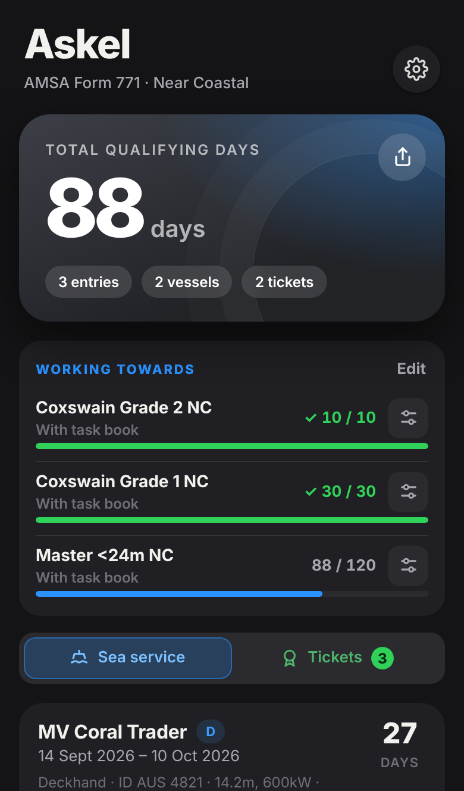
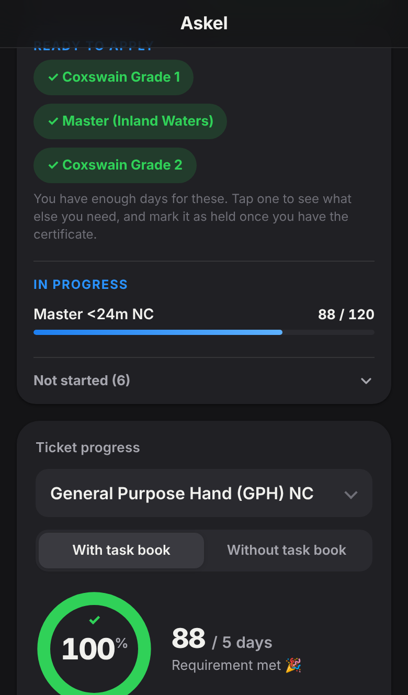
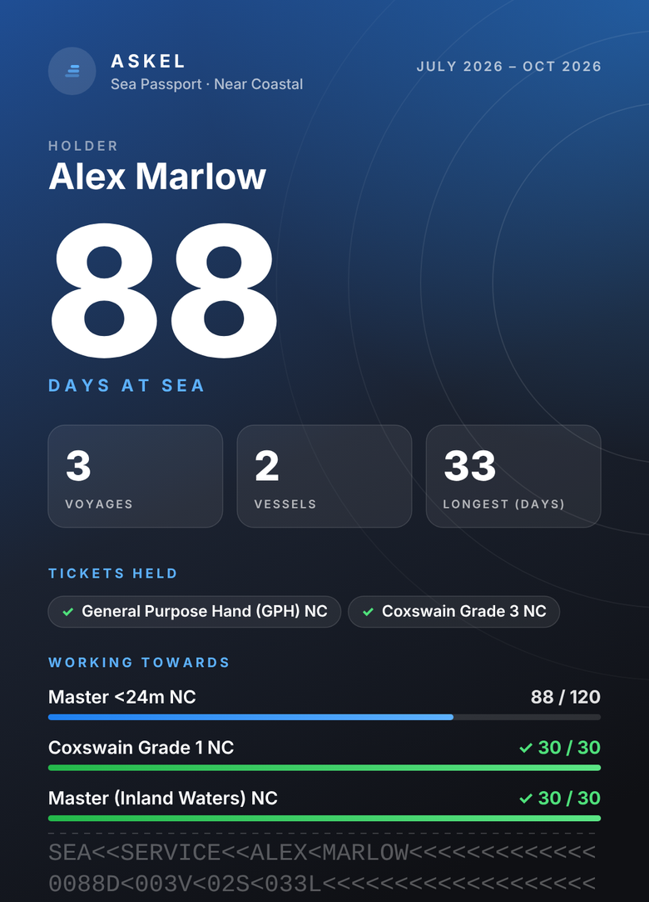
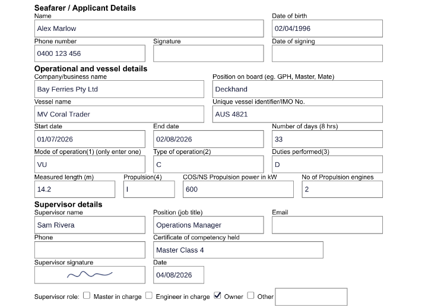

For marine operators
Askel gives your crew a fast way to log sea service and get it signed from a phone, and gives you a live view of every crew member's progress toward AMSA near coastal tickets.
How it works
Add the vessel and days in seconds. Askel counts what qualifies for each ticket, using AMSA's day, vessel size and power rules, and shows exactly how close they are.
A text or email lands on their phone. They check the days, draw their signature and send it back. Signatures are drawn, not typed.
The signature is placed straight onto AMSA's own Form 771, or onto a sea service letter, ready to attach to the application.
Live demo
Try the supervisor's side yourself, then look at what you would see as the operator.
Your skipper or operations manager gets this on their phone. Change the days, draw a signature and tap send.
Example data. Nothing is saved or sent.
Who is ready to apply, who is waiting on a signature, and which tickets your crew are heading toward. Click a row to see every ticket.
Example crew. Sort, filter and open any row.
The crew app
Crew see their progress at a glance, choose the tickets they are working towards, and keep their own record for life.




For operators
Plan training, shifts and promotions with real numbers instead of chasing paperwork.
Crew join with a company code. Their progress updates whenever they log time, with no links to open and no spreadsheets.
See how many crew are working toward each ticket, who is close, and who has enough days but needs a signature.
Every day is marked as signed by a supervisor or still waiting, so you know exactly what is ready for AMSA.
Download a CSV, or print a clean PDF report for management with every crew member's tickets, progress and notes.
Keep a note against each crew member, such as when their Master course starts. Only managers of your company can see them.
You see names, tickets and signed days. You do not see date of birth, phone, email or vessel history. Crew can leave a company and keep their own record.
Built around AMSA's rules
Askel follows AMSA's published near coastal requirements, so crew are not guessing whether a day counts.
Pricing
Crew use the app free, always. You pay one monthly price for the dashboard, based on the size of your company. No per-seat fees, and no charge when you add crew.
Up to 15 crew
Up to 50 crew
More than 50 crew
Every company starts with a free 90-day pilot. Prices in AUD, plus GST where it applies. Pay annually and get two months free.
Questions
AMSA's Form 771 page says the supervisor's signature can be signed electronically or physically, but cannot be typed. Askel collects a drawn signature on the supervisor's phone. AMSA assesses sea service when someone applies, so crew should still keep their usual supporting evidence.
No. They open a link, check the details, draw their signature and send. It takes about 30 seconds.
They install the app, create an account, and enter your company code in Settings. From then on their progress appears on your dashboard.
The record belongs to the crew member. They can leave your company at any time and keep their sea service log, and you stop seeing their progress.
Yes for logging. Entries are saved on the phone and sync when the crew member is next online.
One flat monthly price based on the size of your company: $99 for up to 15 crew, $299 for up to 50, and from $599 above that. Crew always use the app free, and there are no per-seat fees. Every company starts with a free 90-day pilot.
Your dashboard locks. Your crew keep full use of their own app and all of their records, because those belong to them.
Start a pilot with a handful of crew and see how much paperwork disappears.